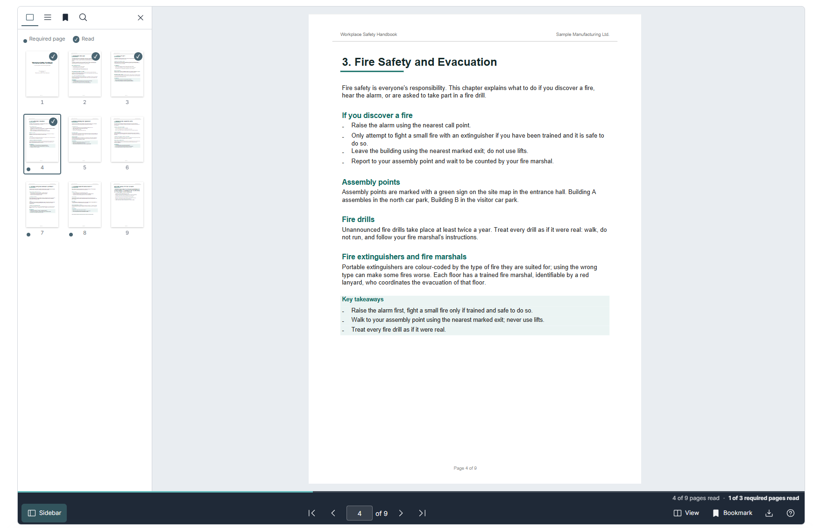
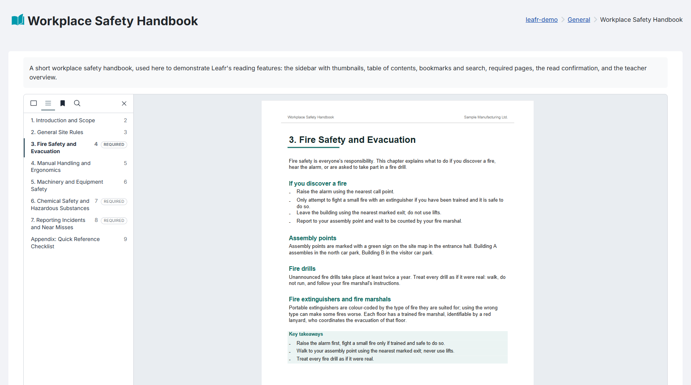
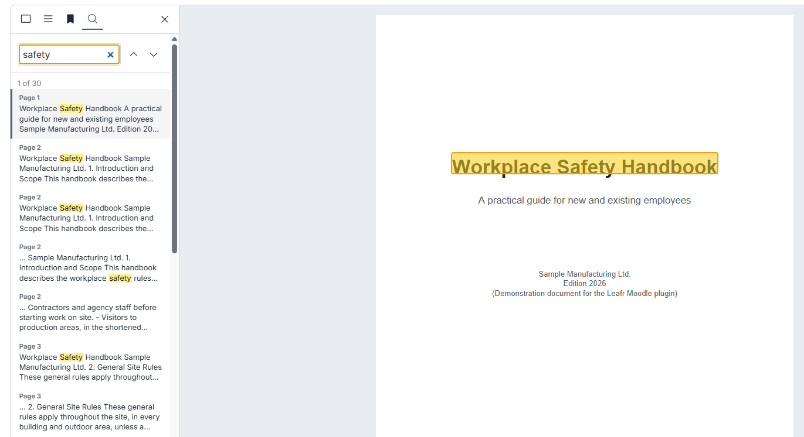
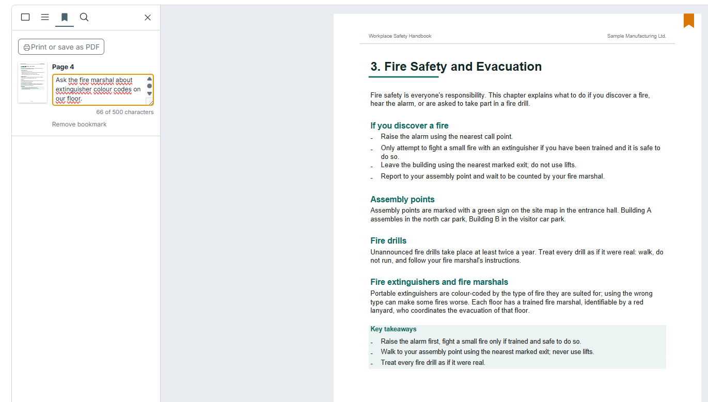
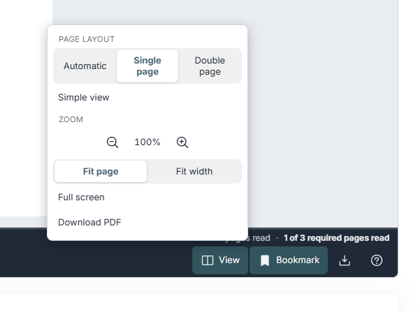
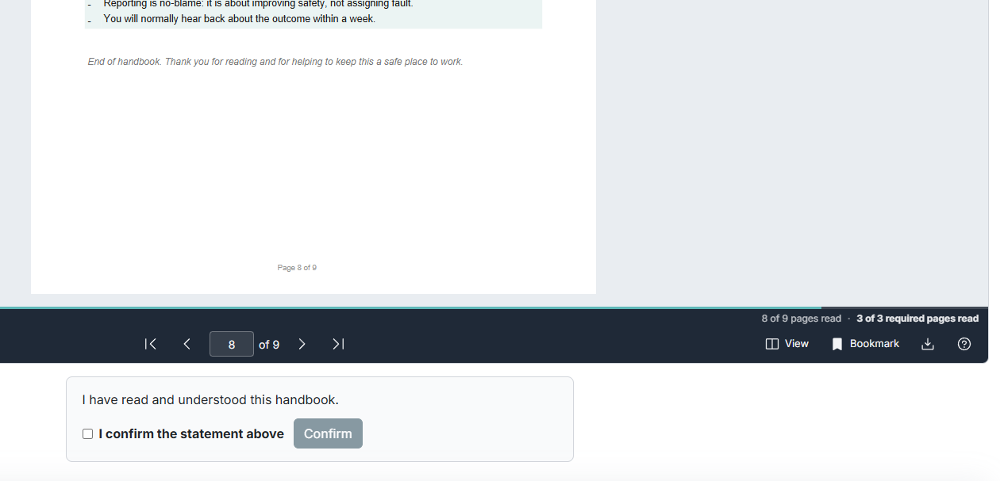
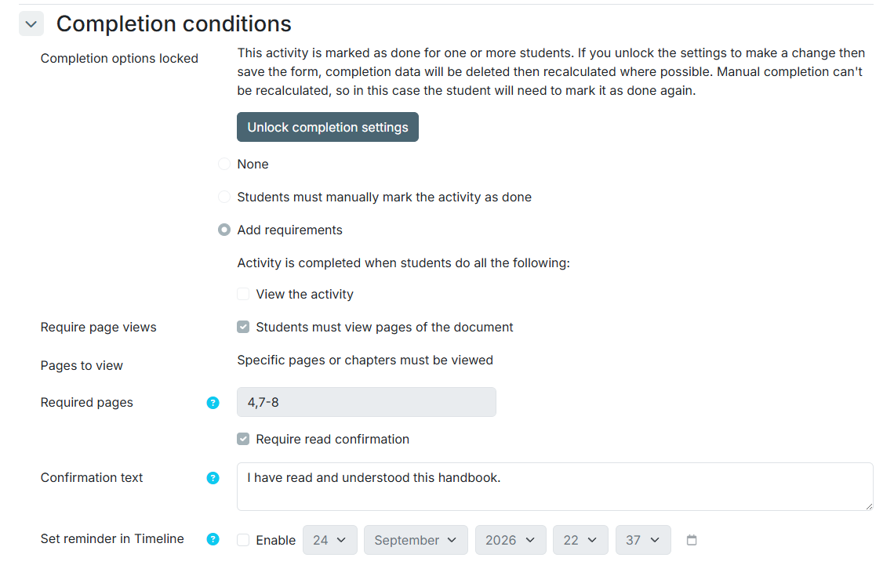
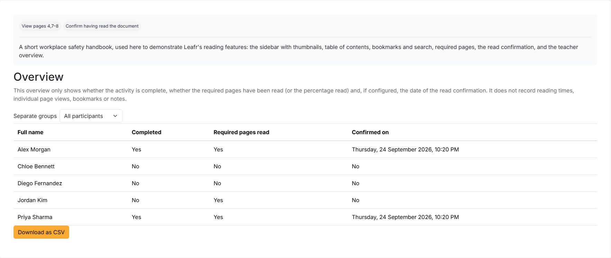

A PDF that reads like a book, not a download.
Leafr turns any PDF in your Moodle course into a book students can page through — with chapters, a table of contents, bookmarks and notes they can export, and a real place to pick up where they left off.

What Leafr is for
Moodle already lets you attach a PDF as a plain file. Leafr is for the cases where that isn't enough.
A book, not a scroll
Real page-turning, chapters, a table of contents and bookmarks with your own notes — read a long document the way you'd read a book. Bookmarks and notes can be exported as a PDF.
Proof of reading, not just a tick-box
Mark certain pages or chapters as required, and ask for an active read confirmation with a timestamp — for material people actually have to read, like safety briefings and policies.
Accessible from the ground up
A simple, scrollable view that's fully accessible to screen readers sits alongside the book view as an equal alternative, not an afterthought.
Privacy by design, not an afterthought
No external service, no analytics tool, full support for Moodle's Privacy API — and deliberately no tracking of reading times or how long someone lingered on a page.
Built for teaching, not just IT
An overview report per participant, flexible completion rules, manual chapters for PDFs without an outline, and an interface available in German, English and Spanish.
If none of that applies and a plain file or a "Resource" activity is enough for your PDF, you don't need Leafr — and that's a fine outcome.
Features
Everything below ships in the free plugin. There is no paid tier and nothing held back.
For students
Book view with realistic page-turning, or a simple scrollable view that's fully accessible to screen readers. Continue-reading picks up where you left off. Sidebar with thumbnails, contents, bookmarks with notes, and full-text search. Zoom, fit-to-page, full screen, and keyboard shortcuts. Works on phones and tablets with swipe navigation.
For teachers
Completion by last page, percentage, or specific pages/chapters. Optional read confirmation. An overview report per participant with group filter and CSV export. Manual chapters for PDFs without an outline. Optional PDF download. Backup, restore, duplication, course reset, and full Privacy API support.
Screenshots
The reader, the teacher-facing settings, and the overview report.







Built with data minimalism in mind
This isn't a compliance afterthought — it shapes what Leafr tracks in the first place.
Leafr stores, per user and activity, only what it needs to do its job:
- which pages were viewed, and the last reading position
- bookmarks (page number and note)
- the time of a read confirmation, if that's enabled
- two interface preferences (simple view, page layout)
All of it can be exported and deleted through Moodle's standard Privacy API. No reading times, no per-page dwell tracking, no data sent to any external service — everything stays inside your own Moodle installation.
FAQ
Why an active read confirmation instead of just counting page views?
For mandatory material like safety briefings or policies, "the page was open" often isn't a reliable enough signal that something was actually read. An active confirmation is a deliberate click, not an inferred timestamp.
What does the teacher overview report show?
Completion status, which required pages have been read, and the read-confirmation date for each participant — with a group filter and CSV export.
Can I choose exactly which pages or chapters count as "read"?
Yes, through the completion rules (last page, a percentage, or specific pages/chapters) and manual chapters for PDFs without their own outline.
Does any data leave my Moodle instance?
No. Leafr doesn't call out to any external service, analytics tool or API — everything runs on your own Moodle server, under whatever hosting and backup policy it already has.
Can I export bookmarks and notes?
Yes, as a printable page or PDF — useful for keeping a record of what was marked and why.
Which languages does Leafr support?
German, English and Spanish for the interface.
Which Moodle and PHP versions are supported?
Moodle 4.5 to 5.2 (tested with 4.5, 5.0, 5.1 and 5.2), PHP 8.1 or later.